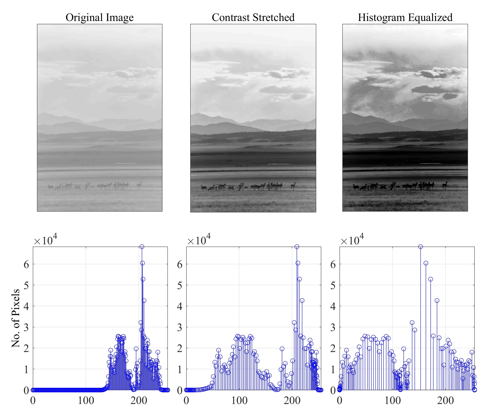
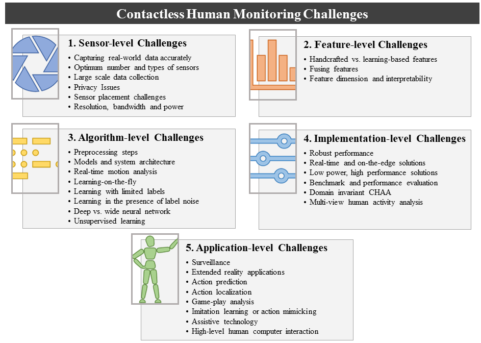
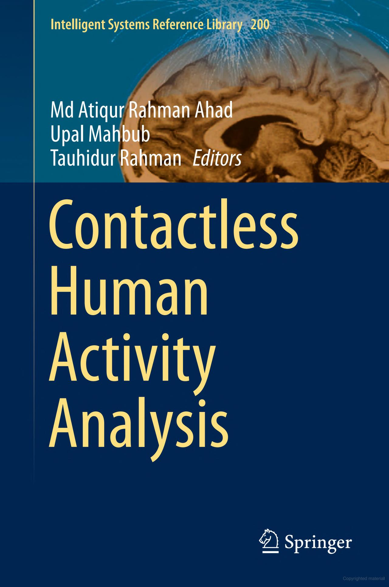
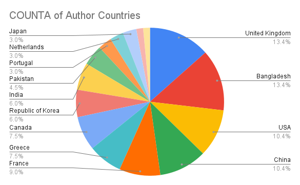
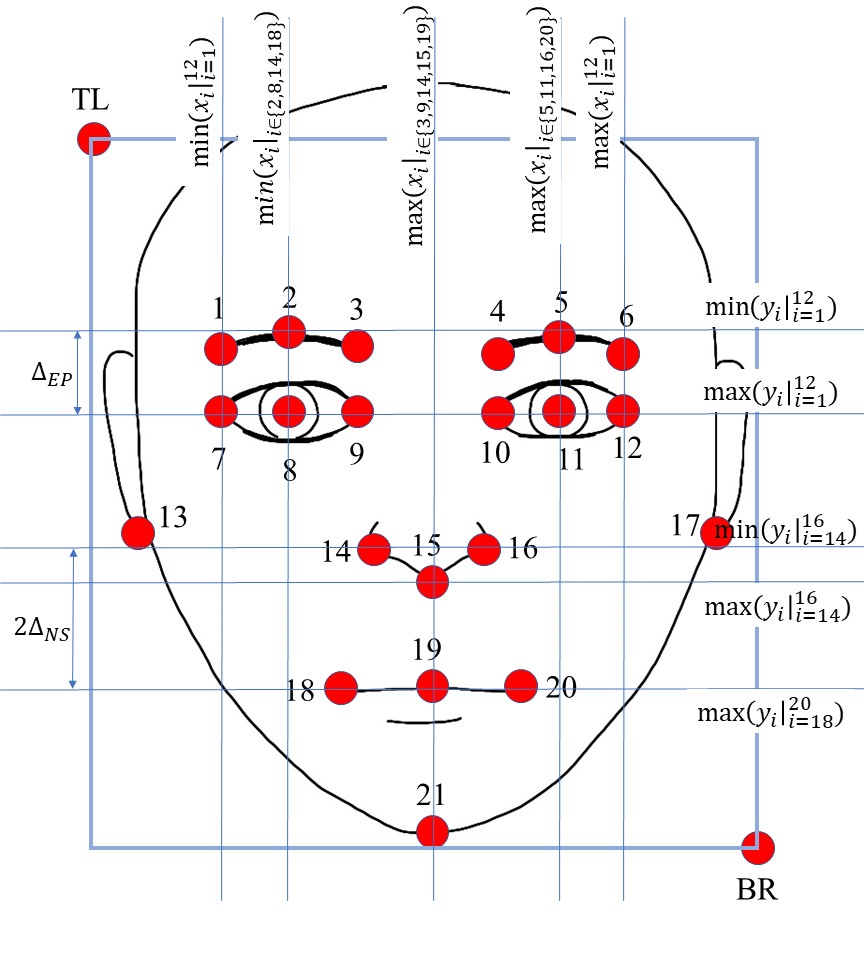
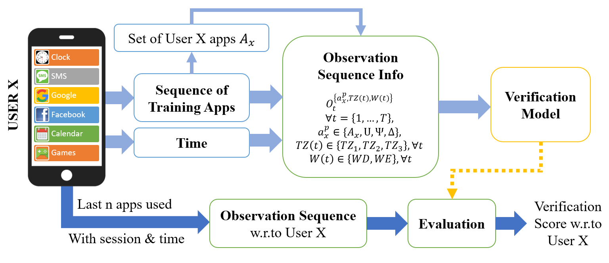
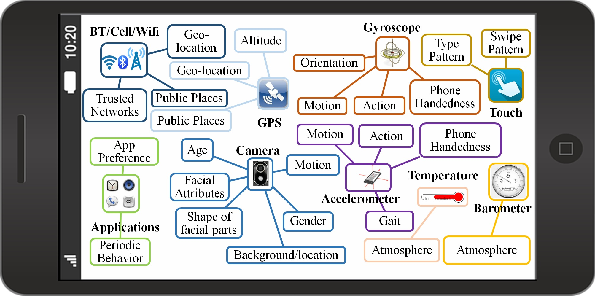
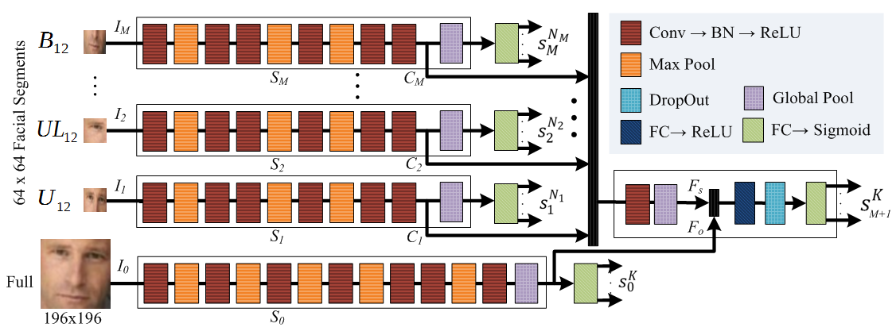
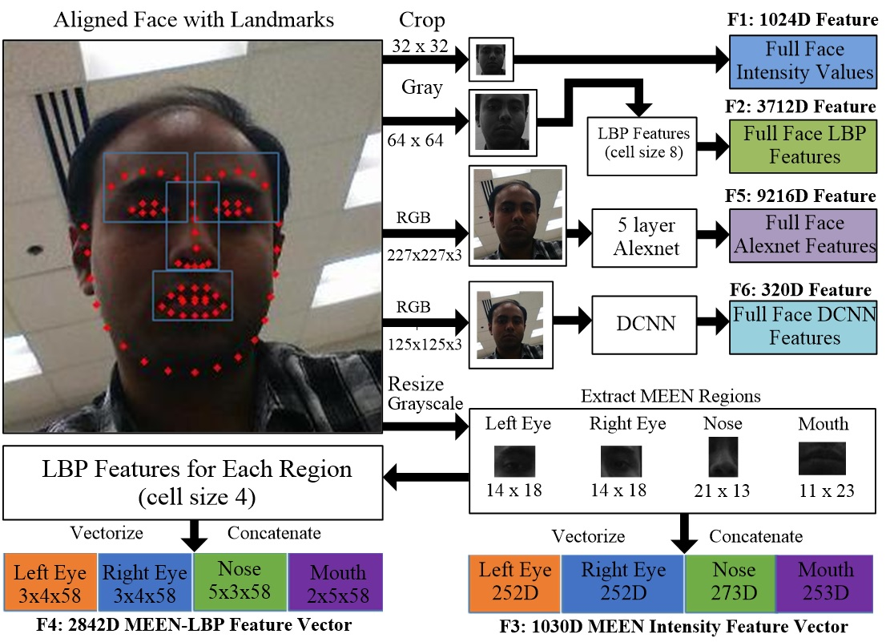

Publications
2022
2021
- 
-  Book Chapter ’21
-  Book ’21
-  PRL Editorial ’21
2020
- Impact of injection attacks on sensor-based continuous authentication for smartphonesComputer Communications , 2020
2019
-  IVC ’19Partial face detection in the mobile domainImage and Vision Computing (IVC ’19) , 2019
-  T-Biom ’19Continuous authentication of smartphones based on application usageIEEE Transactions on Biometrics, Behavior, and Identity Science (T-Biom ’19) , 2019
2018
- Segment-based methods for facial attribute detection from partial facesIEEE Transactions on Affective Computing , 2018
-  Ph.D. Thesis
2017
-  FG ’17Pooling facial segments to face: The shallow and deep endsIn 2017 12th IEEE International Conference on Automatic Face & Gesture Recognition (FG 2017) (FG ’17) , 2017
- UPSET and ANGRI: Breaking high performance image classifiersarXiv preprint arXiv:1707.01159 , 2017
2016
-  BTAS ’16: Best PosterActive User Authentication for Smartphones: A Challenge Data Set and Benchmark ResultsIn 8th IEEE International Conference on Biometrics: Theory, Applications, and Systems (BTAS) (BTAS ’16: Best Poster) , 2016
- New methods for handling binary constraints.In Allerton , 2016
2015
- Exploiting wavelet and prosody-related features for the detection of voice disordersAmerican Journal of Biomedical Engineering & Technology , 2015
- Human action recognition based on spectral domain featuresProcedia computer science , 2015
2014
- Action recognition based on statistical analysis from clustered flow vectorsSignal, Image and Video Processing , 2014
- A single-channel acoustic echo cancellation scheme using gradient-based adaptive filteringCircuits, Systems, and Signal Processing , 2014
- Gradient Based Adaptive Algorithm for Echo Cancellation from Recorded Echo Corrupted SpeechAdvances in Electrical Engineering , 2014
- Single-channel acoustic echo cancellation in noise based on gradient-based adaptive filteringEURASIP Journal on Audio, Speech, and Music Processing , 2014
- Action Recognition by Exploiting Wavelet FeaturesInternational Journal of Intelligent Computing in Medical Sciences & Image Processing , 2014
2013
- A template matching approach of one-shot-learning gesture recognitionPattern Recognition Letters , 2013
- Temporal segmentation of gestures using gradient orientation of depth imagesIn 2013 International Conference on Informatics, Electronics and Vision (ICIEV) , 2013
- One-shot-learning gesture recognition using motion history based gesture silhouettesIn Proceedings of the International Conference on Industrial Application Engineering , 2013
- A multi-resolution action recognition algorithm using wavelet domain featuresIn 2013 2nd IAPR Asian Conference on Pattern Recognition , 2013
2012
- Series active power filter implementation using PQ theoryIn 2012 International Conference on Informatics, Electronics & Vision (ICIEV) , 2012
- Gesture recognition with depth images—a simple approachIn 2012 Proceedings of SICE Annual Conference (SICE) , 2012
- Motion clustering-based action recognition technique using optical flowIn 2012 International Conference on Informatics, Electronics & Vision (ICIEV) , 2012
- Fuzzy logic driven adaptive pid controller for pwm based buck converterIn 2012 International Conference on Informatics, Electronics & Vision (ICIEV) , 2012
- Detection of voice disorders based on wavelet and prosody-related propertiesIn 2012 IEEE International Symposium on Circuits and Systems (ISCAS) , 2012
- Gradient based adaptive filter algorithm for single channel acoustic echo cancellation in noiseIn 2012 7th International Conference on Electrical and Computer Engineering , 2012
2011
- An optical flow based approach for action recognitionIn 14th international conference on computer and information technology (ICCIT 2011) , 2011
- Action recognition algorithm based on optical flow and RANSAC in frequency domainIn SICE Annual Conference 2011 , 2011
- Synchronous detection and digital control of shunt active power filter in power quality improvementIn 2011 IEEE Power and Energy Conference at Illinois , 2011
- An optical flow-based action recognition algorithmIn IEEE conference on computer vision and pattern recognition , 2011
- Acoustic echo and noise cancellation schemes using time and frequency domain adaptive techniques, 2011